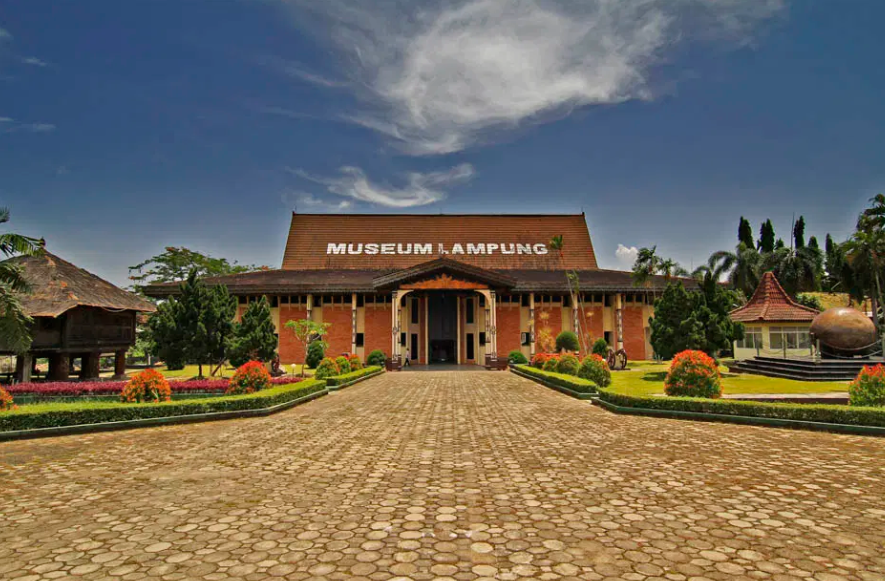

Sejarah
Provinsi Lampung didirikan pada 18 Maret 1964 melalui Peraturan Pemerintah Nomor 31964 yang kemudian menjadi Undang-undang Nomor 14 tahun 1964. Sebelumnya, Lampung merupakan bagian dari Provinsi Sumatera Selatan. Sejarah Lampung mencakup periode penjajahan Belanda, di mana VOC (Vereenigde Oost-Indische Compagnie) berusaha menguasai wilayah ini.
Pada zaman Sultan Agung Tirtayasa di Banten (1651-1683), VOC berupaya menguasai Lampung dengan membujuk putranya, Sultan Haji. Setelah perjanjian dengan VOC pada 27 Agustus 1682, VOC dan Banten memasuki Lampung pada 29 Agustus 1682. Meski tidak semua pemimpin Lampung tunduk, hubungan antara Banten dan Lampung terjalin.
Pada masa Raffles (1811), Lampung tidak diserahkan kepada Belanda. Namun, setelah Raffles meninggalkan Lampung, Residen Belanda ditunjuk pada tahun 1829. Radin Inten memimpin perlawanan terhadap Belanda, dan pada 1825, Belanda mengirim ekspedisi. Radin Inten meninggal pada 1825, digantikan oleh Radin Imba Kusuma, yang kemudian diusir Belanda pada tahun 1834.
Perlawanan rakyat Lampung berlanjut, dan Belanda membentuk tentara sewaan. Pada 1913, dibangun jalan kereta api untuk mengangkut hasil perkebunan. Lampung aktif terlibat dalam perjuangan kemerdekaan hingga akhirnya Provinsi Lampung didirikan pada tahun 1964.